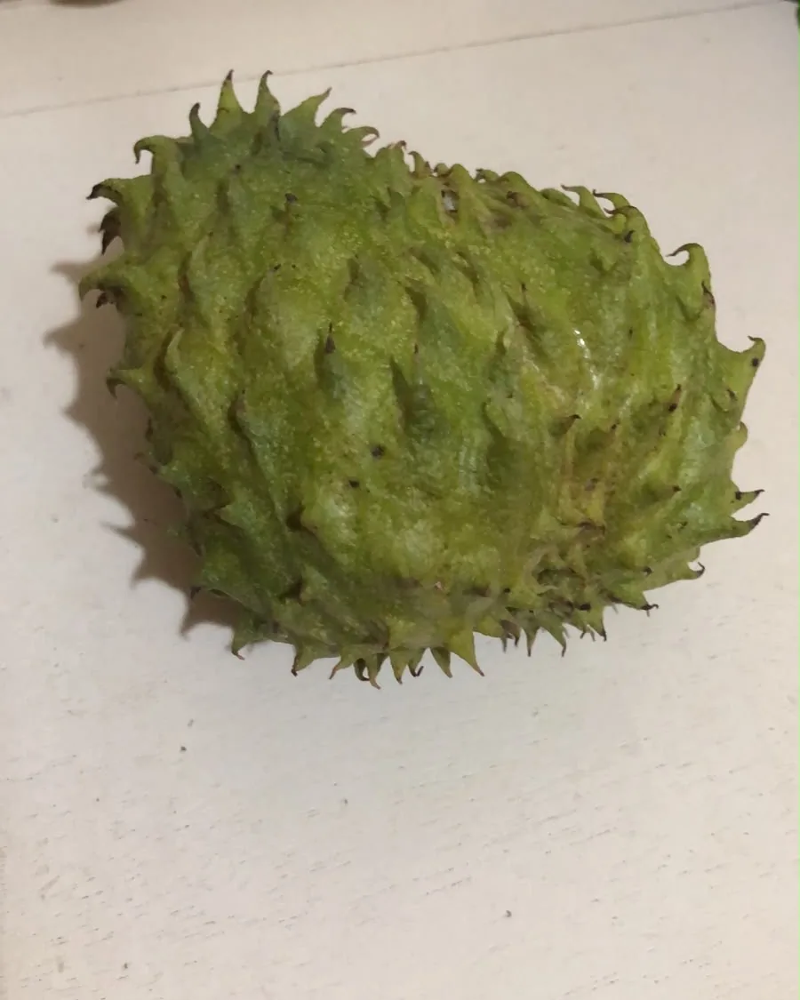

Graviola na calçada: as frutas que crescem nas ruas do Tarraf II
O Francisco, morador do Tarraf II, encontrou uma graviola num pé plantado na calçada do vizinho. Depois, os vizinhos contaram mais: pitanga, acerola, amora, até jatobá, e um mistério: quem colhe tudo antes de todo mundo?
Ler a história